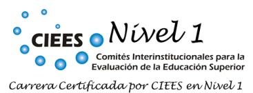

| Desarrollo de Software de Aplicación | Desarrollo de Software de Base | Gestión Tecnológica | Computación Científica |
| Desarrolla ambientes y aplicaciones innovadoras de cómputo que solucionan problemas y necesidades en diversos entornos, considerando criterios de funcionalidad, eficiencia, seguridad y costo, mediante el uso de técnicas y herramientas metodológicas de la disciplina. | Desarrolla algoritmos y software de base que se utilizan como entornos y herramientas de soporte para la implementación y operación de aplicaciones, basados en modelos y teorías computacionales. | Resuelve problemas relacionados con las tecnologías de información y comunicaciones, proponiendo estrategias que optimizan el empleo de los recursos en los procesos administrativos, productivos y de servicios de las organizaciones. | Desarrolla modelos computacionales para la simulación y el estudio de sistemas complejos en las ciencias, utilizando las teorías matemática y computacional. |
Perfil de Egreso
Áreas de competencia de egreso
Para el logro del objetivo de la carrera se definieron cuatro áreas de competencia: Desarrollo de Software de Aplicación, Desarrollo de Software de Base, Gestión Tecnológica y Computación Científica. Para cada área de competencia se describe su correspondiente competencia de egreso, las cuales se presentan en la tabla siguiente:
Desagregado de saberes
Las cuatro tablas siguientes describen con mayor detalle los saberes, por cada competencia de egreso, que los alumnos de la Licenciatura en Ciencias de la Computación deben desarrollar:
| Área de competencia 1: Desarrollo de Software de Aplicación | ||
| Desarrolla ambientes y aplicaciones innovadoras de cómputo que solucionen problemas y necesidades en diversos entornos, considerando criterios de funcionalidad, eficiencia, seguridad y costo, mediante el uso de técnicas y herramientas metodológicas de la disciplina. | ||
| Saber hacer | Saber conocer | Saber ser |
|
Administra el proceso de desarrollo de un programa de cómputo, con base a requisitos del sistema de software y plazos establecidos. Evalúa de manera eficiente, las necesidades de sistemas de software de una organización. Establece los requerimientos del usuario en sistemas de información, considerando las necesidades de la organización. Analiza los requerimientos de un sistema de información para la solución de problemas, con base en técnicas de ingeniería de software. Diseña arquitecturas de software que se ajusten a las necesidades del sistema, de manera pertinente. Codifica programas de cómputo con base en el lenguaje de programación adecuado, para la solución de un problema. Comprueba la operación de un sistema de software, mediante técnicas de validación. Modifica programas de software en las organizaciones, acorde a la evolución del sistema. |
Categoriza los requerimientos de sistemas de software de las organizaciones, de manera correcta. Describe las etapas de la metodología de desarrollo de software, de forma ordenada y clara. Diferencia los lenguajes de programación, considerando los paradigmas de programación. Reconoce las diferentes pruebas para la validación de un sistema de software. Identifica las diversas técnicas de análisis de la metodología de desarrollo de software. Describe las estructuras de datos, arquitecturas de software e interfaces humano computadora, de acuerdo al proceso de ingeniería de software. |
Se comunica en español en forma oral y escrita en sus intervenciones profesionales y en su vida personal, utilizando correctamente el idioma. Aplica los conocimientos en sus intervenciones profesionales con pertinencia. Actualiza sus conocimientos y habilidades para su ejercicio profesional, de forma autónoma y permanente. Desarrolla su pensamiento en intervenciones profesionales, de manera crítica, reflexiva y creativa. Trabaja con otros en ambientes multi, inter y transdisciplinarios de manera cooperativa. Resuelve problemas en contextos locales, nacionales e internacionales, de manera profesional. Responde a nuevas situaciones en su práctica profesional, en contextos locales, nacionales e internacionales, con flexibilidad. Manifiesta comportamientos profesionales y personales, en los ámbitos en los que se desenvuelve, de manera transparente y ética. Establece relaciones interpersonales, en los ámbitos en los que se desenvuelve, de manera positiva y respetuosa. Trabaja bajo presión de manera eficaz y eficientemente. |
| Área de competencia 2: Desarrollo de Software de Base | ||
| Desarrolla algoritmos y software de base que se utilizan como entornos y herramientas de soporte para la implementación y operación de aplicaciones, basados en modelos y teorías computacionales. | ||
| Saber hacer | Saber conocer | Saber ser |
|
Diseña algoritmos computacionales para el desarrollo de software de base, considerando criterios de eficiencia. Utiliza lenguajes de programación en la implementación de software de base con eficacia. Emplea estructuras de datos eficientes en la solución de problemas que requieren optimización de recursos de cómputo. Emplea mecanismos de abstracción de datos en la codificación de aplicaciones y herramientas. Implementa algoritmos en la construcción de software de base, utilizando los modelos y las teorías computacionales de manera eficiente. Selecciona aplicaciones de software de base existentes, con base en su desempeño, en la solución eficiente de problemas. Desarrolla módulos de sistemas operativos, que interactúan con otros componentes de software de manera integrada. Plantea oportunidades de desarrollo de software de base, para la solución innovadora de problemas informáticos y computacionales. |
Describe la estructura básica de un sistema computacional en sus componentes de hardware y software, de manera clara y precisa. Describe con claridad, la forma de interacción de los componentes y la organización de un sistema operativo. Explica los procesos que realizan los traductores, compiladores e intérpretes, con base a las teorías de lenguajes de programación. Describe herramientas de desarrollo de software factibles de emplearse en la solución de problemas. Describe con precisión los modelos y protocolos de comunicaciones empleados por las computadoras. Identifica los estándares empleados por la industria de cómputo en el ámbito del software de base. |
Se comunica en español en forma oral y escrita en sus intervenciones profesionales y en su vida personal, utilizando correctamente el Aplica los conocimientos en sus intervenciones profesionales con pertinencia. Actualiza sus conocimientos y habilidades para su ejercicio profesional, de forma autónoma y permanente. Desarrolla su pensamiento en intervenciones profesionales, de manera crítica, reflexiva y creativa. Manifiesta comportamientos profesionales y personales, en los ámbitos en los que se desenvuelve, de manera transparente y ética. Pone de manifiesto su compromiso con la calidad y la mejora continua en su práctica profesional de manera responsable. Establece relaciones interpersonales, en los ámbitos en los que se desenvuelve, de manera positiva y respetuosa. Trabaja bajo presión de manera eficaz y eficientemente. |
| Área de competencia 3: Gestión Tecnológica | ||
| Resuelve problemas relacionados con las tecnologías de información y comunicaciones, proponiendo estrategias que optimizan el empleo de los recursos en los procesos administrativos, productivos y de servicios de las organizaciones. | ||
| Saber hacer | Saber conocer | Saber ser |
|
Evalúa los procesos de gestión de la información en una organización de acuerdo a un plan establecido. Propone soluciones innovadoras en una organización con base en los resultados de una evaluación de procesos de gestión. Diseña estrategias de desarrollo tecnológico acordes a los planes de la organización. Plantea acciones orientadas a la mejora continua como parte de la gestión tecnológica de la organización. Dirige proyectos de gestión tecnológica de acuerdo a los objetivos de la organización. Justifica la adquisición y contratación de servicios tecnológicos, acorde a las necesidades de la organización. Planea programas de capacitación en tecnologías de información, para el personal de una organización. Gestiona la documentación de tecnologías de información en la organización con base en estándares establecidos. |
Describe los componentes de los procesos de gestión tecnológica en una organización de forma clara. Identifica las tecnologías informáticas utilizadas en una organización de forma clara y precisa. Describe los requerimientos informáticos de los procesos administrativos, productivos y de servicios en una organización. Describe estrategias de gestión tecnológica para una organización de acuerdo a estándares y normas nacionales e internacionales. Describe las etapas de la planeación de proyectos tecnológicos de forma precisa. Explica los métodos de estimación de riesgos en proyectos tecnológicos de forma clara y detallada. Describe los principios de la propiedad intelectual en una organización de forma clara. |
Se comunica en español en forma oral y escrita en sus intervenciones profesionales y en su vida personal, utilizando correctamente el idioma. Usa las TIC en sus intervenciones profesionales y en su vida personal de manera pertinente y responsable. Gestiona el conocimiento en sus intervenciones profesionales y en su vida personal, de manera pertinente. Actualiza sus conocimientos y habilidades para su ejercicio profesional, de forma autónoma y permanente. Interviene con iniciativa y espíritu emprendedor en su ejercicio profesional y personal de forma autónoma y permanente. Formula, gestiona y evalúa proyectos en su ejercicio profesional, considerando los criterios del desarrollo sostenible. Toma decisiones en su práctica profesional y personal, de manera responsable. Establece relaciones interpersonales, en los ámbitos en los que se desenvuelve, de manera positiva y respetuosa. Trabaja bajo presión de manera eficaz y eficientemente. |
| Área de competencia 4: Computación Científica | ||
| Desarrolla modelos computacionales para la simulación y el estudio de sistemas complejos en las ciencias, utilizando las teorías matemática y computacional. | ||
| Saber hacer | Saber conocer | Saber ser |
|
Elige el método científico para el estudio y análisis de problemas complejos que requieren del cómputo científico. Aplica el método científico y conocimientos teóricos matemáticos y de computación, en la representación de problemas y soluciones. Elije las herramientas computacionales de hardware y software apropiados, para la resolución de problemas. Determina los alcances del modelado matemático y computacional en la solución de problemas. Caracteriza problemáticas inter e intra disciplinares, utilizando un lenguaje formal. Diseña modelos computacionales con precisión, creatividad y razonamiento lógico, para la solución de problemas complejos. Construye modelos matemáticos y métodos numéricos en la resolución de problemas complejos. Implementa simulaciones con base en modelos formales de problemas complejos, utilizando herramientas computacionales. Ejecuta experimentos con base en modelos computacionales que reproducen las condiciones del entorno real o controlado. Evalúa cuantitativa y cualitativamente los resultados de las simulaciones de problemas complejos. |
Identifica las principales metodologías de investigación que se utilizan en el cómputo científico. Identifica de manera precisa los elementos del modelado y cómputo científico. Diferencia las herramientas computacionales de hardware y software que se utilizan en la resolución de problemas. Identifica las limitaciones de los modelos matemáticos y computacionales en la solución de problemas. Explica de manera precisa los procesos de modelado y simulación computacional de problemas multidisciplinares. Reconoce la importancia de la precisión del cálculo computacional en problemas de riesgo crítico. |
Se comunica en español en forma oral y escrita en sus intervenciones profesionales y en su vida personal, utilizando correctamente el idioma. Se comunica en inglés de manera oral y escrita, en la interacción con otros de forma adecuada. Utiliza habilidades de investigación, en sus intervenciones profesionales con rigor científico. Aplica los conocimientos en sus intervenciones profesionales con pertinencia. Actualiza sus conocimientos y habilidades para su ejercicio profesional, de forma autónoma y permanente. Desarrolla su pensamiento en intervenciones profesionales, de manera crítica, reflexiva y creativa. Interviene con iniciativa y espíritu emprendedor en su ejercicio profesional y personal de forma autónoma y permanente. Formula, gestiona y evalúa proyectos en su ejercicio profesional, considerando los criterios del desarrollo sostenible. Trabaja con otros en ambientes multi, inter y transdisciplinarios de manera cooperativa. Resuelve problemas en contextos locales, nacionales e internacionales, de manera profesional. Responde a nuevas situaciones en su práctica profesional, en contextos locales, nacionales e internacionales, con flexibilidad. Pone de manifiesto su compromiso con la calidad y la mejora continua en su práctica profesional de manera responsable. Establece relaciones interpersonales, en los ámbitos en los que se desenvuelve, de manera positiva y respetuosa. Trabaja bajo presión de manera eficaz y eficientemente. |
Competencias disciplinares
Las competencias disciplinares representan la integración dinámica de conocimientos, habilidades, actitudes y valores que desarrolla el estudiante, comunes a un área disciplinar, para Ciencias de la Computación se definen las siguientes:
- Interpreta correctamente tablas, gráficas, diagramas y textos expresados con lenguajematemático y científico, que se utilizan en las matemáticas de nivel superior.
- Construye modelos matemáticos mediante la aplicación de procedimientos aritméticos, algebraicos y geométricos, para la comprensión y análisis de situaciones reales o hipotéticas.
- Diseña algoritmos computacionales eficientes aplicando conceptos básicos de matemáticas discretas, lógica, algoritmia y complejidad computacional.
- Soluciona problemas matemáticos a través de modelos numéricos, algebraicos, geométricos, gráficos, analíticos y computacionales.
- Resuelve problemas computacionales aplicando el conocimiento de la estructura, organización, funcionamiento, programación e interconexión de sistemas de cómputo.
Informes
Facultad de Matemáticas
Periférico Norte Tablaje 13615,
Junto al local del FUTV.
Telefónos: 942 31 40 al 49
Horario: 8:00 a 20:00 horas.
Correo institucional: http://www.matematicas.uady.mx/
M. en C. Enrique Ayala Franco:
enrique.ayala@correo.uady.mx
Coordinador la Licenciatura en Ciencias de la Computación
Coordinador la Licenciatura en Ciencias de la Computación
Acreditaciones
Programa en Nivel 1 de CIEES
Programa Acreditado por el CONAIC